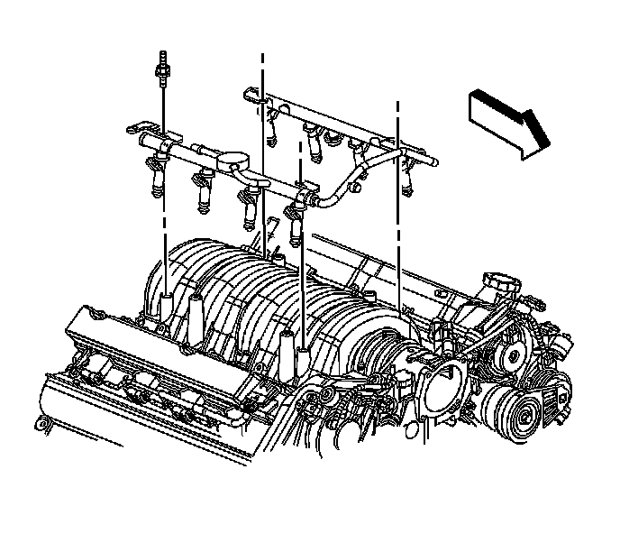

Fuel Injector and Fuel Rail Replacement
Fuel Injector and Fuel Rail Replacement
Removal Procedure
Notice:
* Remove the fuel rail assembly carefully in order to prevent damage to the injector electrical connector terminals and the injector spray tips. Support the fuel rail after the fuel rail is removed in order to avoid damaging the fuel rail components.
* Cap the fittings and plug the holes when servicing the fuel system in order to prevent dirt and other contaminants from entering open pipes and passages.
1. Relieve the fuel system pressure. Refer to Fuel Pressure Relief (With CH 48027) (Fuel Pressure Relief (With CH 48027))Fuel Pressure Relief (Without CH 48027) (Fuel Pressure Relief (Without CH 48027)) .
2. Remove the cross vehicle brace. Refer to Cross Vehicle Brace Replacement (Cross Vehicle Brace Replacement) .
3. Clean the fuel rail assembly with a spray type engine cleaner, GM X-30A or equivalent, if necessary. Follow the package instructions. Do not soak the fuel rail in liquid cleaning solvent.

4. Disconnect the fuel feed hose/pipe (1) from the fuel rail. Refer to Metal Collar Quick Connect Fitting Service (Metal Collar Quick Connect Fitting Service) .

5. Remove the positive crankcase ventilation (PCV) dirty air hose.

6. Disconnect the evaporative emission (EVAP) quick connect fitting (2). Refer to Plastic Collar Quick Connect Fitting Service (Plastic Collar Quick Connect Fitting Service) .

7. Open the retainers (1 and 2) located at the right side rear of the engine and the front of dash. Position the lines aside.

8. Disconnect the left side fuel injector wiring harness connectors (1) from the fuel injectors (2).

9. Disconnect the right side fuel injector wiring harness connectors (1) from the fuel injectors (2).

10. Remove the fuel injector sight shield bracket.

11. Remove the fuel rail attaching studs.
12. Remove the fuel rail assembly.
13. Remove the injector lower O-ring seal from the spray tip end of each injector.
14. Discard the O-ring seals.
15. Remove the retainers from the fuel injectors.
16. Remove the fuel injectors from the fuel rail.
17. Remove the O-ring seals from the fuel injectors. Discard the O-ring seals.
Installation Procedure
Notice:
* Use care when servicing the fuel system components, especially the fuel injector electrical connectors, the fuel injector tips, and the injector O-rings. Plug the inlet and the outlet ports of the fuel rail in order to prevent contamination.
* Do not use compressed air to clean the fuel rail assembly as this may damage the fuel rail components.
* Do not immerse the fuel rail assembly in a solvent bath in order to prevent damage to the fuel rail assembly.
1. Lubricate the new fuel injector O-ring seals with clean engine oil.
2. Install the new fuel injector O-ring seals on to the fuel injectors.
3. Install the fuel injectors to the fuel rail using new retainer clips.
4. Ensure that the injectors are aligned by orientating the electrical connectors perpendicular to the crankshaft centerline.
5. Lubricate and install the new O-ring seals on the spray tip end of each injector.
6. Align the fuel injectors and fuel rail to the intake manifold.
7. Carefully press the fuel rail assembly downward until fully seated against the intake manifold.
Notice: Refer to Fastener Notice (Fastener Notice) .
8. Install the fuel rail attaching studs.
Tighten the studs to 10 N.m (89 lb in).
9. Install the fuel injector sight shield bracket nuts.
Tighten the nuts to 10 N.m (89 lb in).
10. Connect the right side fuel injector electrical connectors (1) to each fuel injector (2).
11. Connect the left side fuel injector electrical connectors (1) to each fuel injector (2).
12. Install the fuel feed and EVAP lines to the retaining clips (1 and 2) at the right side rear of the engine and at the front of dash.
13. Install the EVAP quick connect fitting (2) to the purge valve. Refer to Plastic Collar Quick Connect Fitting Service (Plastic Collar Quick Connect Fitting Service) .
14. Install the positive crankcase ventilation (PCV) dirty air hose.
15. Connect the fuel feed hose/pipe to the fuel rail (1). Refer to Metal Collar Quick Connect Fitting Service (Metal Collar Quick Connect Fitting Service) .
16. Install the cross vehicle brace. Refer to Cross Vehicle Brace Replacement (Cross Vehicle Brace Replacement) .
17. Connect the negative battery cable. Refer to Battery Negative Cable Disconnection and Connection (LHD) (Service and Repair)Battery Negative Cable Disconnection and Connection (RHD) (Service and Repair) .
18. Inspect for fuel leaks using the following procedure:
1. Turn ON the ignition, with the engine OFF for 2 seconds.
2. Turn OFF the ignition for 10 seconds.
3. Turn ON the ignition, with the engine OFF.
4. Inspect for fuel leaks.
19. Install the fuel injector sight shield. Refer to Fuel Injector Sight Shield Replacement (Service and Repair) .